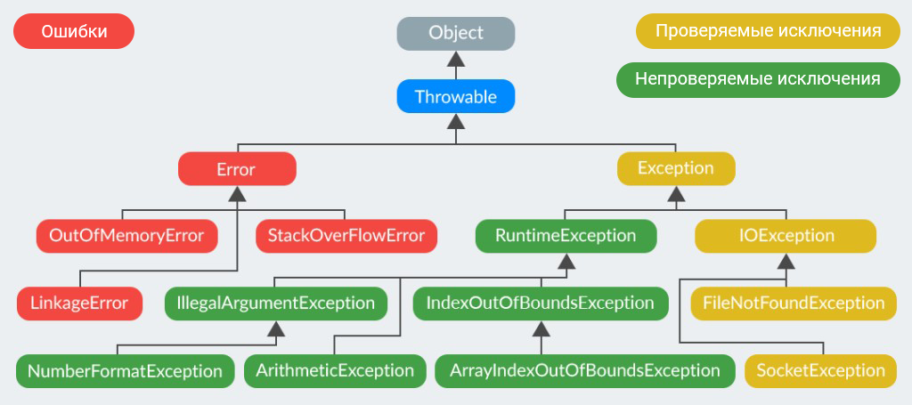

Вопросы-ответы 📋
Флагманский раздел, который дополняется и обновляется по мере поступления.
Объектно-ориентированное программирование 💡
Как называется связь, при которой один объект управляет временем жизни другого?
Композиция — строгое отношение части-целого (HAS A), когда объект является
частью другого объекта и
не может
принадлежать ещё
кому-то.
Примеры:
Класс машина содержит объект класса двигатель. Машина полностью управляет жизненным
циклом двигателя. При уничтожении объекта машины в памяти, вместе с ним уничтожится и объект двигателя.
Сердце является частью тела одного человека и не
может
быть частью тела ещё одного человека одновременно.
Что такое интерфейс?
Интерфейс описывает поведение, но не реализует его. Когда класс имплементирует интерфейс, то между ними
«заключается контракт», по которому класс обязан реализовать в себе все методы имплементированного интерфейса.
В джаве 8 появились методы по умолчанию — это методы внутри интерфейса с ключевым словом
default, в которых можно сделать реализацию по умолчанию.
Что такое абстрактный класс?
Это чертёж/шаблон, в котором описано базовое состояние и поведения для будущих классов-наследников.
Класс является абстрактным, если хотя бы один из его методов является абстрактным.
Абстрактный класс может содержать не только абстрактные методы, но и обычные.
Наследник абстрактного класса должен реализовать все абстрактные методы класса-родителя, либо
должен быть объявлен абстрактным сам.
Нельзя создать экземпляр (объект) абстрактного класса. От абстрактного класса наследуются другие классы.
Аналогия: абстрактный класс — это «заготовка», которую нельзя использовать (создавать
экземпляры), потому что она ещё слишком «сырая».
Что такое абстракция?
Выделение главных, наиболее значимых характеристик предмета и отбрасывание второстепенных,
незначительных.
Пример: чтобы добраться до дома, нам важно знать точный адрес — улицу, номер дома, подъезд, но
не важно из какого кирпича построен дом или количество этажей в нём.
Что такое полиморфизм?
Проявление одного поведения разными способами. Пример: животные могут издавать звуки,
при этом кошка мяукает, а собака лает.
Принцип «один интерфейс — множество реализаций», даёт способность
объекту принимать множество различных форм и возможность использовать объекты с одинаковым
интерфейсом без информации о внутреннем устройстве объекта.
Реализуется в джаве с помощь интерфейсов,
перегрузки и переопределения методов.
Что такое инкапсуляция?
Позволяет объединить данные и методы в классе, и скрыть детали их реализации от пользователя.
Ограничение доступа к данным и возможностям их изменения, реализуется с помощью модификаторов доступа,
геттеров-сеттеров.
Пример: водителю не нужно знать, что происходит внутри машины и как работает её двигатель
под капотом. Чтобы ехать на машине, водителю достаточно знать как управлять её «интерфейсами» — рулём и
педалями.
Что такое наследование?
Механизм, который позволяет описать новый класс на основе существующего (родительского).
Свойства и функциональность родительского класса заимствуется наследником, а недостающую функциональность
можно дописать отдельно. Позволяет повторно использовать код — поля и методы, описанные в родительском классе,
можно
использовать в классе-потомке.
Пример: как и в реальной жизни, все мы чем-то похожи на наших родителей, а
чем-то отличаемся от них.
Что такое принципы ООП?
Это 4 основных парадигмы, на которых базируется подход объектно-ориентированного программирования:
- Наследование.
- Инкапсуляция.
- Полиморфизм.
- Абстракция.
Зачем нужно ООП?
Чтобы структурировать код, повысить его читабельность и ускорить понимание логики программы.
ООП делает код более простым и наглядным. Человеку гораздо удобнее работать с реальными объектами, чем с
набором данных и функций.
Такой подход помогает строить сложные системы более просто и естественно благодаря
тому, что всё разбивается на объекты и каждый из них слабо связан с другими объектами.
ООП позволяет упростить сложные объекты, составляя их из более маленькие и простые, поэтому над программой
могут
работать сотни разработчиков, каждый из которых занят своим блоком.
Что такое ООП?
Объектно-ориентированное программирование — представление программы в виде объектов, взаимодействующих друг с
другом.
Джава ☕️
Какая сложность поиска элемента в LinkedList по индексу?
За линейное время O(n) выполняются операции поиска элемента по индексу и по значению.
Что ещё следует помнить о LinkedList, решая, использовать ли данную коллекцию:
- Не синхронизирована;
- Позволяет хранить любые объекты, в том числе
null и повторяющиеся;
- За константное время O(1) выполняются операции вставки и удаления первого и последнего элемента,
операции
вставки и удаления элемента из середины списка (не учитывая время поиска позиции элемента, который
осуществляется за линейное время);
Иерархия классов исключений
Throwable — базовый класс для всего, что может быть использовано с оператором throw и в
конструкции try-catch.
Error — НЕпроверяемые исключения, которые означают серьезные проблемы (например,
неисправность JVM). Не должны обрабатываться.
Exception — проверяемые исключения, кроме RuntimeException. Их требуется обрабатывать
или «пробрасывать», добавляя throws в вызывающем исключение методе.
RuntimeException — НЕпроверяемые исключения во время выполнения программы (runtime). Не требует
обработки.

В чём отличие параметра от аргумента?
Параметры задаются при объявлении функции, а аргументы передаются при её вызове.
Что такое объект?
Экземпляр класса.
Что такое класс?
Шаблон для создания объектов.
Пример: чертёж, по которому строятся дома или собираются машины.
Как можно использовать закрытый конструктор?
private конструктор класса можно использовать для паттерна singleton: в классе создаётся
статический метод, в котором создаётся экземпляр класса и возвращается, если не был создан ранее.
Что такое конструктор по умолчанию?
Если конструктор класса не определен явно, то для класса создается конструктор по умолчанию. Конструктор
по умолчанию инициализирует все переменные экземпляра значениями по умолчанию. Но, как только в
классе будет определен собственный конструктор, конструктор по умолчанию больше не используется.
Чем отличаются final, finally и finalize?
final — нельзя наследоваться от final класса, нельзя переопределить
final метод и нельзя изменить значение final поля.
finally — используется при обработке исключений, выполняется всегда, даже если произошла ошибка,
кроме System.exit(0).
finalize() — метод использовался перед удалением неиспользуемого объекта для освобождения ресурсов
(deprecated с джавы 9).
Что такое generics?
Обобщения — это параметризованные типы. С их помощью можно объявлять классы, конструкторы, интерфейсы и методы,
где тип
данных указан в виде параметра. Обобщения делятся на 2 категории: параметризованные типы и «сырые»
типы.
Параметризованные типы (generic types) — это типы с указанием параметра в угловых скобках, пример:
List<String> list = new ArrayList<>();
Сырые типы (raw types) — наоборот, без указания параметра, пример:
List list = new ArrayList<>();
Не нужно использовать сырой тип, потому что он остался в языке
только для обратной совместимости.
Обобщения нужны для проверки типов во время компиляции (безопасность типов) и устранения
необходимости явного приведения.
Что такое autoboxing и unboxing?
Автоупаковка — механизм неявного преобразования примитивных типов данных в соответствующие
классы-обёртки (объекты). Распаковка происходит в обратном направлении.
Компилятор использует метод valueOf(), чтобы преобразовать примитивные типы в объекты,
а методы IntValue(), doubleValue() и т.д., чтобы получить примитивные типы объекта.
Пример: автоупаковка применяется компилятором когда значение примитивного типа
передается аргументом в метод, который ожидает объект соответствующего класса-обёртки или когда
значение примитивного типа присваивается переменной, соответствующего класса-обёртки.
Модификатор native
Используется в методах, написанных на C++. Ключевое слово native сообщает компилятору, что метод
реализован в другом месте.
Методы, помеченные native, можно переопределять обычными методами в подклассах.
Зачем нужен метод hashCode?
Коллекции HashMap и HashSet используют хеш-код, как основу для работы с объектами. Если хеш для равных объектов
будет разным, то в HashMap будут два равных значения, что является ошибкой. Поэтому необходимо соответствующим
образом переопределять метод hashCode.
Что будет, если переопределить hashCode, не переопределяя equals?
Мы по-прежнему не сможем найти объект в хеш-таблице. Хотя можно будет найти корзину хеш-таблицы, в которой
объект будет лежать. Для успешного поиска объекта в хеш-таблице, помимо сравнения хеш-значений ключа,
используется также определение
логического равенства ключа с искомым объектом. То есть без переопределения метода equals никак не получится
обойтись.
Что будет, если переопределить equals, не переопределяя hashCode?
Тогда 2 объекта по equals() могу быть логически равны, но по hashCode() они буду разными. Таким образом,
помещая некий объект в контейнер хеш-таблицы (HashMap и HashSet), мы рискуем не
получить его обратно по ключу.
Пример: HashSet для быстрого поиска рассчитывает для каждого элемента hashCode
и именно по этому ключу ищет и упорядочивает элементы внутри себя.
Какой контракт между equals и hashCode?
Если объекты равны по equals(), то их хеш-коды должны быть одинаковыми.
Если объекты разные по equals(), то их хеш-коды могу быть как одинаковыми (коллизия), так и
разными. Для производительности работы хеш-таблиц лучше, чтобы разные объекты возвращали разные хеш-коды.
Если хеш-коды разные, то и входные объекты гарантированно разные.
Если хеш-коды равны, то входные объекты не всегда равны.
Методы equals и hashCode должны возвращать одни и те же значения для одного и того же объекта при каждом
последующем
вызове, пока поля объекта, участвующие в вычислении значения, не изменились.
Итого:
- Для одного и того-же объекта, хеш-код всегда будет одинаковым.
- Если объекты одинаковые, то и хеш-коды одинаковые (но, не наоборот, см. правило 3).
- Если хеш-коды равны, то входные объекты не всегда равны (коллизия).
- Если хеш-коды разные, то и объекты гарантированно разные.
Зачем переопределять equals и hashCode?
Потому что они связаны общим контрактом, для соблюдения которого переопределять их необходимо вместе. Методы
обязательно нужно переопределить, чтобы эффективно использовать экземпляры как ключи в HashMap или HashSet.
Правила переопределении equals
- Рефлексивность: объект должен равняться самому себе. Пример:
a.equals(a) == true.
- Симметричность: если
a.equals(b) == true, то b.equals(a) == true.
- Транзитивность: если
a.equals(b) == true и b.equals(c) == true, то
c.equals(a) == true.
- Консистентность: повторный вызов метода
equal() должен возвращать одно и тоже значение до тех
пор, пока
какое-либо свойство объекта не будет изменено. Если два объекта равны, то они будут равны пока их
свойства остаются неизменными.
- Сравнение null: объект должен быть проверен на
null. Если объект равен null, то
метод должен вернуть false, а
не NullPointerException. Пример: a.equals(null) == false.
Метод finalize
void finalize() — вызывается перед удалением неиспользуемого объекта.
Deprecated с джавы 9. Вместо финализатора всегда стоит использовать try/finally, try-with-resource
или более
специализированными классами пакета java.lang.ref.
Метод clone
Object clone() — возвращает новый объект, не отличающийся от клонируемого.
Реализация метода по умолчанию выполняет неполное, поверхностное (shallow) копирование — копия объекта будет
ссылаться на оригинальный объект.
Методы notify, notifyAll и wait
Методы для многопоточности, все они вызываются только из синхронизированного блока или метода.
wait() — переводит вызывающий поток в состояние ожидания на этом объекте и отпускает его монитор.
Выполнение продолжиться, когда другой поток вызовет метод notify() и отпустит блокировку
монитора объекта.
notify() — возобновляет работу потока, у которого ранее был вызван метод wait().
notifyAll() — возобновляет работу всех потоков, у которых ранее был вызван метод
wait().
Метод toString
Возвращает строковое представление объекта.
По умолчанию возвращает ПолноеИмяКласса@хеш-код в 16-ричной системе, так как это
малоинформативно,
то при создании нового класса, принято переопределять метода так, чтобы возвращаемая строка содержала в себе имя
класса, имена и значения всех переменных. Алгоритм метода из документации:
getClass().getName() + '@'' + Integer.toHexString(hashCode())
Метод equals
Сравнивает два объекта.
По умолчанию сравнивает объекты по ссылке и возвращает истину только если ссылки указывают на
один
и тот же объект. При этом содержимое объекта не учитывается, поэтому при создании пользовательского класса
принято переопределять метод так, чтобы учитывались переменные объекта.
Метод hashCode
Возвращает хеш-код, целое число, генерируемое на основе конкретного объекта.
По умолчанию значение вычисляется по целочисленному адресу памяти, занимаемой объектом.
Метод getClass
Возвращает класс объекта во время выполнения.
В основном используется для рефлексии.
Методы класса Object
Методы, которые доступны всем классам в джаве:
- boolean equals(Object object)
- int hashCode()
- String toString()
- Class<?> getClass()
- Object clone()
- void wait()
- void wait(long timeout)
- void wait(long timeout, int nanos)
- void notify()
- void notifyAll()
- void finalize()
Полные сигнатуры методов:
public boolean equals(Object object)
public native int hashCode()
public String toString()
public final native Class<?> getClass()
protected native Object clone() throws CloneNotSupportedException
public final void wait() throws InterruptedException
public final native void wait(long timeout) throws InterruptedException
public final void wait(long timeout, int nanos) throws InterruptedException
public final native void notify()
public final native void notifyAll()
protected void finalize() throws Throwable
Методы getClass(), notify(), notifyAll(), wait() являются финальными и их нельзя переопределять.
Класс Object
Базовый класс Object, все остальные классы являются подклассами и производными от этого класса, даже
если в объявлении это явно не указано. Поэтому все типы и классы могут реализовать
методы, которые определены в классе Object. А ссылочная переменная класса Object может
ссылаться на объект любого другого класса.
Котлин 😼
Какие исключения существуют в котлине?
Все исключения в котлине являются наследниками класса Throwable. У каждого исключения есть
сообщение,
трассировка стека и причина (опционально), по которой это исключение было вызвано.
В котлине нет проверяемых исключений, в отличии от джавы. Компилятор котлина не различает checked
и
unchecked исключения, для него все они — НЕпроверяемые и нужно самостоятельно
решать, стоит ли их ловить и
обрабатывать.
Совместимость с джавой:
- Проверяемые исключения из джавы в котлине можно не проверять и не объявлять (поскольку их нет в котлине).
- Проверяемые исключения из котлина (например, появившиеся изначально из джавы) в джаве проверять
необязательно.
- Если исключения нужно проверить (например, при вызове котлин-кода из джавы), то их можно сделать
проверяемыми, используя в методе аннотацию
@Throws (необходимо указать, какие исключения этот
метод может выбрасывать). Эта аннотация нужна только для
совместимости с джавой (на практике ее многие используют, чтобы декларировать, что подобный метод в
принципе может передавать какие-то исключения).
От каких классов может наследоваться data-класс?
data class — может наследоваться от абстрактного класса или от open class и
имплементировать интерфейсы.
data class — НЕ может наследоваться от обычного класса или от другого
data class, потому что они final.
Что такое Any?
Все классы в котлине являются наследниками Any — аналог Object в джаве, но с меньшим
количеством функций:
- equals()
- hashCode()
- toString()
Полные сигнатуры методов:
public open operator fun equals(other: Any?): Boolean
public open fun hashCode(): Int
public open fun toString(): String
Что такое Nothing?
Nothing — класс, который является наследником любого класса в котлине (даже класса с модификатором
final). Nothing нельзя создать — у него приватный конструктор.
Полезен при объявлении функции, которая не только ничего не возвращает, но и не завершается. Например функция,
которая выбрасывает исключение или в которой запущен бесконечный цикл.
Пример: если произошла ошибка при запросе данных из БД или удалённого
сервера, то можно использовать Nothing, чтобы узнать тип ошибки.
Что такое Unit?
Unit эквивалентен void в джаве. Функции, которые не возвращают значений, на
самом деле неявно возвращают объект
Unit.
Что такое sealed-класс?
Класс с модификатором sealed не может иметь наследников, объявленных вне класса. Все
подклассы-наследники
должны быть вложены в запечатанный класс.
Ключевое преимущество sealed класса в его использовании вместе с выражением when,
которое
требует обработки всех возможных вариантов. Используя sealed класс, компилятор выдаст
ошибку, если не обработать все подклассы в when. А так как компилятор обязует нас обработать
все подклассы, то добавлять else в when больше не нужно.
Преимущество в том, что если в sealed класс добавляется новый подкласс, то компилятор потребует
его обработки во всех when, где он использовался.
sealed класс также называют «enum на стероидах» из-за их схожей
механики и того, что sealed лишён недостатков enum.
Классы enum допускают только один экземпляр каждого значения и не могут кодировать дополнительную информацию о
каждом типе (пример: случай Error, имеющий соответствующее свойство Exception).
Какие условия для создания data-класса?
- У конструктора должен быть как минимум 1 параметр.
- Все параметры конструктора должны быть
val или var. Рекомендуется использовать
val для свойств, поскольку на их основании вычисляется хеш-код, который используется в качестве
ключа объекта в HashMap.
- Класс-данных НЕ может быть
abstract, open, sealed,
inner.
Что такое data-класс?
Класс для хранения данных, в котором автоматически будут сформированы функции из свойств, объявленных в
основном
конструкторе:
toString() — вернёт строку со значениями всех свойств на основе конструктора.
equals() — по прежнему будет возвращать true, если ссылки указывают на один объект.
Но также вернёт true, если
у объектов одинаковые значения свойств, определённых в конструкторе.
hashCode() — если 2 объекта данных равны (одинаковые значения свойств), то функция вернёт для этих
объектов одно и то же
значение.
copy() — функция создаёт копию объекта данных, у которого была вызвана. При этом можно изменить
некоторые свойства,
оставив другие в исходном состоянии. Для этого ей передаются имена всех изменяемых свойств с новыми значениями.
componentN() — компонентные функции, которые соответствуют свойствам, в соответствии с порядком их
объявления.
Класс данных часто используется для создания полноценного класса-модели с геттерами и сеттерами.
Удобен при
работе с JSON.
Чем var отличается от val?
val (value) — это неизменяемое (immutable) значение только для чтения.
var (variable) — это изменяемая (mutable) переменная для чтения и записи.
Что такое функция?
Фрагмент кода для многократного использования.
Аналог методу в джаве.
Андроид 🤖
Что делает RxJava-оператор Map?
Map() — преобразует каждый элемент, излучаемый Observable, и эмитит измененный
элемент. Можно создать цепочку из такого количества Map(), которое нужно, чтобы придать данным
наиболее
удобную и простую форму для Observer.
Оператор используется там, где необходимо выполнить офлайновые операции с эмитируемыми данными.
Пример: ответ от сервера не соответствует требованию. В этом случае Map() может
использоваться для изменения эмитируемых
данных.
Что делает RxJava-оператор SwitchMap?
SwitchMap() — отписывается от предыдущего
источника Observable всякий раз, когда новый элемент начинает излучать данные, тем самым всегда
эмитит данные из текущего Observable.
SwitchMap() кардинально отличается от
FlatMap() и ConcatMap(). Оператор лучше всего подходит, если нужно проигнорировать
промежуточные результаты и рассмотреть последний.
Пример: приложение мгновенного поиска, которое отправляет поисковый запрос на сервер каждый раз,
когда пользователь что-то вводит в поисковой строке.
Пользователь быстро набирает несколько символов. При наборе каждого символа будет отправляться на сервер
запрос с дополненной строкой на один символ. Благодаря SwitchMap() можем показать результат
только
последнего набранного запроса.
Что делает RxJava-оператор FlatMap?
FlatMap() — принимает на вход данные, излучаемые одним Observable и возвращает
данные, излучаемые другим
Observable, подменяя таким образом один Observable на
другой.
FlatMap() может чередовать элементы при
эмиссии, то есть порядок исходящих элементов не поддерживается. Полезен если порядок выполнения не важен, но
нужно единовременное выполнение.
Что можно сделать с помощью Intent?
- Стартовать
Activity.
- Запустить
Service.
- Отправить
Broadcast.
На каком потоке по умолчанию работает Service?
На главном потоке, в андроиде — это UI thread.
Какой RxJava-оператор подменяет Observable, сохраняя порядок эмит элемента?
ConcatMap() — поддерживает порядок эмиссии данных и ожидает исполнения текущего
Observable. Поэтому лучше
использовать его, когда необходимо обеспечить порядок выполнения задач, но учитывать, что выполнение
ConcatMap() занимает больше времени, чем FlatMap().
ConcatMap()
выдает
схожий с FlatMap() результат, меняется только последовательность эмитируемых данных.
Что такое Service?
Service — это компонент приложения, который используется для выполнения долгих фоновых операций
без
взаимодействия с пользователем.
Любой компонент приложения может запустить сервис, который продолжит работу, даже если пользователь перейдет в
другое приложение.
Примеры использования сервисов: проигрывание музыки, трекинг локации водителя в приложении
такси, загрузка файла
по сети.
Сервисы делятся на 2 вида по способу использования: Started и Bound.
И на 2 вида по способу взаимодействия с
пользователем: Background и Foreground.
Когда спрашивают о видах сервисов, обычно имеют в виду способ использования. Bound
и Started сервисы важно различать, потому что у них разные жизненные циклы.
Чем отличается activity Context от application Context?
Activity Context — создается при создании активити и уничтожается вместе с ней. Контекст —
тяжелый
объект.
Когда говорят об утечке памяти в андроиде, имеют в виду утечку контекста, то есть ситуацию, когда контекст
активити
хранится после вызова Activity.onDestroy(). Не стоит передавать контекст активити в другой
объект,
если не известно,
как долго этот объект проживет.Application Context — синглтон. Application Context создаётся при создании объекта
Application и живет, пока
жив процесс приложения. Поэтому Application Context можно безопасно инжектить в другие синглтоны
в
приложении. Не рекомендуется использовать Application Context для старта активити, потому что
необходимо
создание новой задачи, и для layout inflation, потому что используется дефолтная тема.
Что такое Spannable?
Интерфейс, характеризующий текст, который имеет стилистическую разметку.
Функция Spannable.setSpan() принимает произвольный объект типа Object, который
используется для разметки. Эта функция не бросает исключений. Классы, которые реализуют интерфейс
Spannable, должны игнорировать неподдерживаемые объекты разметки.
ForegroundColorSpan — один из примеров класса-разметки. Используется для изменения цвета текста.
Пример: с помощью Spannable можно создать текст, часть которого окрашена в иной
цвет.
Какие основные компоненты Android-приложения?
4 основных компонента, каждый из которых объявляется в андроид манифесте и может являться точкой входа в
приложение:
Activity — представляет UI и функциональность, видимые пользователю.Service — используется для исполнения долгих операций, которые не требуют взаимодействия с
пользователем.BroadcastReceiver — принимает и обрабатывает broadcast-ивенты, отправленные внутри приложения
или из других приложений.ContentProvider — используется для обмена данными с другими приложениями.
Что такое Fragment?
Используется для отображения части UI на экране. Фрагмент создается внутри Activity или внутри
другого фрагмента.
Для создания и управления фрагментами используется FragmentManager.
Класс-наследник класса Fragment должен иметь дефолтный конструктор без параметров. Система
использует этот конструктор при пересоздании фрагмента.
Начиная с API 28 системный класс Fragment — deprecated. Рекомендуется
использовать Fragment из Support Library.
Что такое Room?
Библиотека из набора Android Jetpack, реализующая уровень абстракции над базой данных SQLite.
API библиотеки Room заточено под использование для кэширования данных, полученных с бэкенда.
Сегодня Room — это стандарт де-факто при работе с базой данных в Android-приложениях. Существуют
RxJava и Guava расширения API Room, которые можно подключить отдельной зависимостью.
Что такое ANR?
Application Not Responding — системный диалог, который показывается пользователю, когда приложение зависает.
Система показывает ANR-диалог если:
- Не поступает ответа на UI-событие, например нажатие на экран, в течение 5 секунд.
BroadcastReceiver не завершил свое выполнение в течение 10 секунд.
Частая причина возникновения ANR — это выполнение I/O операций, таких как чтение и запись в базу данных, в UI
потоке.
Для избежания ANR следует выполнять любые потенциально длительные операции асинхронно в бэкграунд потоке.
Что такое манифест?
XML-инструкция для системы, которая считывается до запуска приложения. В ней описаны компоненты, которые
используются, указана точка доступа (входа) в приложение, название приложения, иконка, разрешения и т. п.
Чаще всего точкой доступа является activity, для этого у неё указывается intent-filter в манифесте:
<intent-filter>
<action android:name="android.intent.action.MAIN" />
<category android:name="android.intent.category.LAUNCHER" />
</intent-filter>
Как создать activity?
Чтобы создать activity, нужно наследоваться от класса Activity и вызвать функцию
onCreate(). В результате мы получим пустой экран.
Чтобы пользователь видел интерфейс и мог взаимодействовать с ним, в onCreate() нужно подгрузить
разметку (layout)
функцией setContentView(View).
Что такое activity?
Экран (окно, форма, фрейм), который обычно видит пользователь. Активити — один из 4 основных компонентов
андроида и так же, как и другие компоненты может быть точкой входа в приложение. Может содержать в себе
несколько View и
Fragment. С помощью активити пользователь может
взаимодействовать с логикой приложения.
Активити с MAIN intent-filter в манифесте запускается при старте приложения, когда
пользователь
нажимает на иконку приложения.
Информационные технологии 💻
Чем отличается процесс от потока?
Процесс — экземпляр программы во время выполнения, независимый объект, которому выделены
системные ресурсы
(например, процессорное время и память). Каждый процесс выполняется в отдельном адресном пространстве: один
процесс не может получить доступ к переменным и структурам данных другого.
Если процесс хочет получить доступ к
чужим ресурсам, необходимо использовать межпроцессное взаимодействие (например, конвейеры, файлы, каналы
связи между компьютерами и т. п.).
Поток — определенный способ выполнения процесса. Когда один поток изменяет ресурс процесса,
это изменение сразу же становится видно другим потокам этого процесса. Поток использует то же самое пространства
стека, что и процесс, а множество потоков совместно используют данные своих состояний.
Каждый поток может работать (читать и писать) с одной и той же областью памяти, в
отличие от процессов, которые не могут просто так получить доступ к памяти другого процесса. У каждого потока
есть собственные регистры и собственный стек, но другие потоки могут их использовать.
Что такое Ping?
Самый базовый инструмент, чтобы проверить, есть ли ответ от хоста.
Что такое IP?
Уникальный (внутри подсети) идентификатор устройства (3-го уровня модели OSI).
Рассказать про каждый уровень OSI
Семиуровневая модель Open Systems Interconnection
| № |
Единица данных |
Уровень |
Функция |
Примеры протоколов |
Слои |
| 1 |
Бит |
Физический (physical). |
Кодирование и передача данных по физическому каналу. |
USB, RJ, Wi-Fi, Bluetooth. |
Media layers |
| 2 |
Кадр/фрейм. |
Канальный (data link). |
Канальная адресация и обнаружение ошибок физического уровня. |
Ethernet, DSL, ARP, DHCP. |
| 3 |
Пакет |
Сетевой (network). |
Логическая адресация и маршрутизация пакетов. |
IP, NAT, IPSec, ICMP. |
| 4 |
Сегмент/датаграмма. |
Транспортный (transport). |
Прямая связь между конечными устройствами, контроль передачи данных. |
TCP, UDP, SCTP. |
Host layers |
| 5 |
Данные |
Сеансовый (session). |
Управление сеансом связи. |
NetBIOS, RPC, PAP, L2TP, gRPC. |
| 6 |
Представления (presentation). |
Представление и шифрование данных. |
JPEG, ASCII, MIDI, MIME, SSL. |
| 7 |
Прикладной (application). |
Взаимодействие с конечным пользователем. |
HTTP, FTP, SSH, POP3, SMTP, SNMP, IMAP, DHCP, DNS, Telnet. |
Что такое сетевая модель OSI?
Модель Open Systems Interconnection — это скелет, фундамент и база всех сетевых сущностей. Модель определяет
сетевые протоколы, распределяя их на 7 логических уровней. В любом процессе, управление
сетевой передачей переходит от уровня к уровню, последовательно подключая протоколы на каждом из уровней:
- Физический (physical).
- Канальный (data Link).
- Сетевой (network).
- Транспортный (transport).
- Сеансовый (session).
- Представления (presentation).
- Приложений (application).
Модель OSI была изначально придумана как стандартный подход, архитектура или паттерн, который бы
описывал сетевое взаимодействие любого сетевого приложения.
Что такое линк?
Соединение между двумя сетевыми устройствами.
Сколько битов в байте?
- 1 байт = 8 бит.
- 1 килобайт = 1024 байт.
- 1 мегабайт = 1024 килобайт.
- 1 гигабайт = 1024 мегабайт.
- 1 терабайт = 1024 гигабайт.
- 1 петабайт = 1024 терабайт.
1 бит — это наименьшая единица в информатике. Бит принимает одно из двух значений —
0 или 1. Последовательность битов из нулей и единиц, позволяет
передать любую информацию в цифровом виде.
1 байт — это наименьшая адресуемая единица информации в памяти компьютера.
Книги 📚
Представлены в ознакомительных целях. После ознакомления, понравившуюся книгу можно купить в
магазине, поддержав тем самым автора произведения напрямую.
📕 Java: эффективное программирование.
👤 Джошуа Блох.
📎 3-е издание «Диалектика», 2019.
🇷🇺 Русский язык. Интерактивное оглавление.
📖 Читать (PDF 33,5 мегабайт).
📕 Философия Java.
👤 Брюс Эккель.
📎 4-е полное издание «Питер», 2015.
🇷🇺 Русский язык. Интерактивное оглавление.
📖 Читать (PDF 99,2 мегабайт).
📕 Head First. Изучаем Java.
👤 Кэти Сьерра, Берт Бейтс.
📎 2-е издание «Эксмо», 2012.
🇷🇺 Русский язык.
📖 Читать (PDF 92,2 мегабайт).
📕 Полное руководство Java.
👤 Герберт Шилдт.
📎 10-е издание «Диалектика», 2018.
🇷🇺 Русский язык. Интерактивное оглавление.
📖 Читать (PDF 148
мегабайт).
📘 Kotlin. Программирование для профессионалов.
👤 Джош Скин, Дэвид Гринхол.
📎 Издательство «Питер», 2020.
🇷🇺 Русский язык. Интерактивное оглавление.
📖 Читать (PDF 8,46 мегабайт).
📘 Head First. Kotlin.
👤 Дон Гриффитс, Дэвид Гриффитс.
📎 Издательство «Питер», 2020.
🇷🇺 Русский язык.
📖 Читать (PDF 12,1 мегабайт).
📘 Kotlin в действии.
👤 Дмитрий Жемеров, Светлана Исакова.
📎 Издательство «ДМК Пресс», 2018.
🇷🇺 Русский язык. Интерактивное оглавление.
📖 Читать (PDF ≈6 мегабайт).
📘 Волшебство Kotlin.
👤 Пьер-Ив Симон.
📎 Издательство «ДМК Пресс», 2020.
🇷🇺 Русский язык. Интерактивное оглавление.
📖 Читать (PDF ≈6 мегабайт).
📗 Эффективное использование потоков в операционной системе Android.
👤 Андерс Ёранссон.
📎 Издательство «ДМК Пресс», 2015.
🇷🇺 Русский язык.
📖 Читать (PDF 98,9 мегабайт).
📗 Android. Программирование для профессионалов.
👤 Кристин Марсикано, Брайан Гарднер, Билл Филлипс, Крис Стюарт.
📎 4-е издание «Питер», 2021.
🇷🇺 Русский язык. Интерактивное оглавление.
📖 Читать
(PDF 13,4 мегабайт).
📗 Head First. Программирование для Android.
👤 Дон Гриффитс, Дэвид Гриффитс.
📎 2-е издание «Питер», 2018.
🇷🇺 Русский язык. Интерактивное оглавление.
📖 Читать
(PDF 28,5 мегабайт).
📗 Android. Сборник рецептов. Задачи и решения для разработчиков приложений.
👤 Ян Дарвин.
📎 2-е издание «Диалектика», 2018.
🇷🇺 Русский язык.
📖 Читать
(PDF 288 мегабайт).
{kind=link}
Комментарии 💬